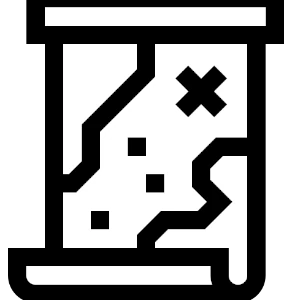

 - This is a Burger Menu for navigation. - The "About Us" page. - The "Other Guides" page. - Return to Main page. All Games and Weaponicons have collapsible sub-menus.


 - The "About Us" page.
- The "About Us" page.